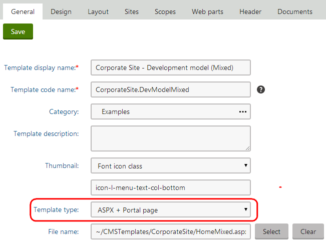
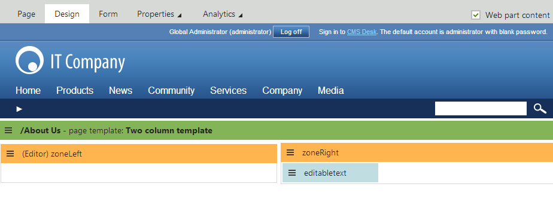
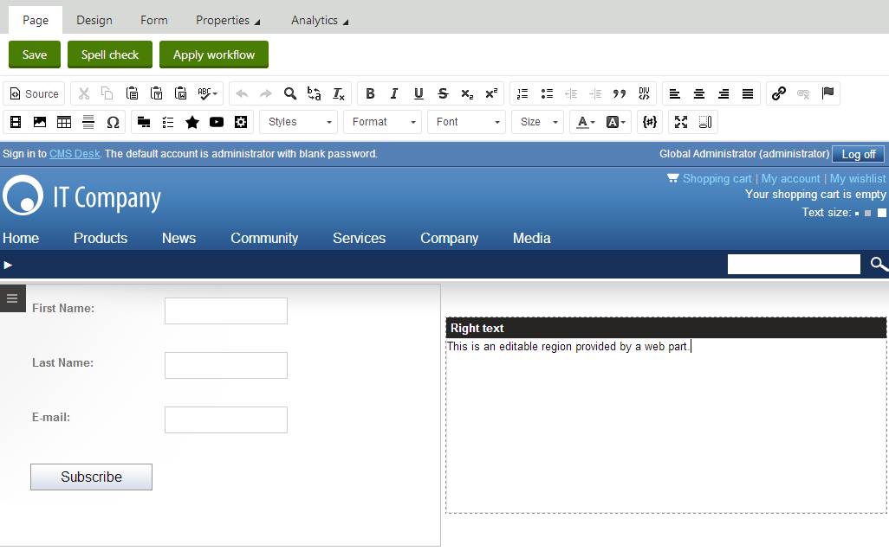

Adding portal engine functionality to ASPX page templates
When developing or maintaining websites built on ASPX page templates, one of the drawbacks is that you need to manually modify the code of pages whenever you wish to change the design. You can add flexibility to ASPX templates by defining areas that are editable directly through the browser in the Pages application, just like when using the Portal engine development model. These areas allow you to add Web parts or Widgets onto ASPX page templates.
Add the following elements to the code of your page templates to integrate portal engine areas:
<cms:CMSPagePlaceholder ID="plcZones" runat="server"> <LayoutTemplate> ... <cms:CMSWebPartZone ID="zoneCenter" runat="server" /> ... </LayoutTemplate></cms:CMSPagePlaceholder>The CMSPagePlaceholder control creates an area on the page that behaves like a portal engine page template. You can place multiple CMSPagePlaceholder controls onto a single page.
The content of the <LayoutTemplate> element defines the layout of the area. You can specify a table structure or a CSS-based layout applies through HTML elements (<div>, <span>, etc.).
The layout may contain multiple CMSWebPartZone controls, which represent fully functional portal engine zones. You can configure every zone to serve as either a standard web part zone or any type of widget zone. Users can manage these zones when editing pages based on the page template on the Design tab of the Pages application. When web part or widget content is added to a zone, information about it is stored in the database along with the respective page template object, not in the actual code of the ASPX page.
CMSPortalManager control required
The CMSPortalManager control must be present on ASPX templates that contain portal engine functionality. The typical solution is to provide the control through the master page of your templates.
When registering ASPX page templates with portal engine functionality in the Page templates application, you need to set the Template type to ASPX + Portal page. This enables the Design tab when editing pages based on the template in the Pages application.

Example
The following example demonstrates how to create an ASPX page template with zones that users can design via the portal engine:
Build a new page template according to the example on the Creating ASPX page templates page.
When writing the template's ASPX code, place the following inside the <asp:Content> element:
<cms:CMSPagePlaceholderID="plcZones"runat="server"><LayoutTemplate><tablestyle="width:100%"><tr><tdstyle="width: 50%"><cms:CMSWebPartZoneID="zoneLeft"runat="server"/></td><tdstyle="width: 50%"><cms:CMSWebPartZoneID="zoneRight"runat="server"/></td></tr></table></LayoutTemplate></cms:CMSPagePlaceholder>This code defines two editable web part zones in a basic two column table layout.
When registering the template in the Page templates application, set the Template type to ASPX + Portal page.
Open the Pages application and add a Page (Menu item) page to the content tree using the new page template.
Switch to the Design tab of the new page. You can see two web part zones on the page.
Expand the menu ( ) of the zoneLeft zone and click Configure.
Switch the Widget zone type property from None to Customization by page editor.
Click Save & Close.
The zone now serves as a widget zone for page editors.
Add a web part to zoneRight, for example Editable text.
Open the Page tab.
Here you can manage the editor widget zone on the left and enter content into the editable text region displayed by the web part on the right.
Open the menu of the editor zone ( ) and click Add new widget to place some widgets onto the page.
Save the page.

Editing widgets and editable region content of a page based on a mixed template
The example demonstrates how to use web parts or widgets to build the design of pages based on ASPX page templates. This approach combines the standard architecture and development process of ASPX templates with the flexibility and user‑friendliness of the portal engine.